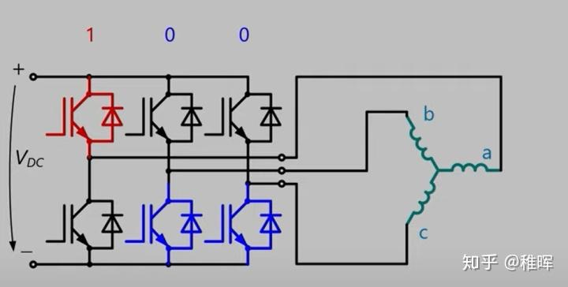

深入浅出讲解FOC算法与SVPWM技术¶
0.前言
最近想做一个机器人项目，设计中需要用到高性能超小体积的伺服电机。
电机这一块性能满足项目需求的基本上只有无刷电机可以选了--又要大功率、大扭矩，又要体积小，成本还最好不要太高，选择低KV值的无刷电机显然是最合适的。我预计的方案中计划把减速器也省略了，采用扭矩无刷电机直驱。那么作为机器人硬件三大核心部件（电机、减速器、驱动器）之一的驱动器，我感觉是有必要自己设计一下的，因此这里把我学习FOC过程中看到的一些有关无刷电机矢量控制的资料和个人理解整理分享出来。
本人非自控/电控专业，如文章有疏漏欢迎指出~
0.1 什么是FOC？
FOC（Field-Oriented Control），直译是磁场定向控制，也被称作矢量控制（VC，Vector Control），是目前无刷直流电机（BLDC）和永磁同步电机（PMSM）高效控制的最优方法之一。FOC旨在通过精确地控制磁场大小与方向，使得电机的运动转矩平稳、噪声小、效率高，并且具有高速的动态响应。
简单来说就是，FOC是一种对无刷电机的驱动控制方法，它可以让我们对无刷电机进行“像素级”控制，实现很多传统电机控制方法所无法达到的效果~
0.2 FOC驱动器和无刷电调的区别
玩过航模的同学可能对无刷电机很熟悉，也应该知道航模中对于无刷电机的驱动使用的是 电子调速器（ESC） 也就是我们常说的电调，那么这个FOC驱动器和普通的电调有什么区别呢？

航模中的无刷电调
FOC的优势：
1.低转速下控制
由于控制原理的区别，无刷电调只能控制电机工作在高转速下，低速下很难控制；而FOC控制器则完全没有这个限制，不论在什么转速下都可以实现精确控制。
2.电机换向
同上面的理由，由于无感电调无法反馈转子位置，因此很难实现电机正反转的换向；而FOC驱动器的换向性能极其优秀，最高转速下正反转切换可以非常顺畅；此外FOC还可以以能量回收的形式进行刹车控制。
3.力矩控制
普通电调都只能控制电机转速，而FOC可以进行电流（力矩）、速度、位置三个闭环控制。
4.噪音
FOC驱动器的噪音会比电调小很多，原因是普通电调采用方波驱动，而FOC是正弦波。
电调的优势：
1.兼容性
电调驱动不同的BLDC不需要进行参数整定，而FOC需要。
2.算法复杂度
电调的算法实现更简单，运算量少，很适合需要提高带宽的超高转速电机。
3.成本
电调的成本比FOC低很多。
综上大家应该可以看出来，FOC驱动器在控制性能上是要比电调强大得多的，其优异的性能和磁场定向控制的原理是密不可分的，下面就会详细介绍FOC控制的实现方法。
1.从电机原理说起
1.1 一些基础知识
1.左手定则
用于判断导线在磁场中受力的方向：伸开左手，使拇指与其他四指垂直且在一个平面内，让磁感线从手心流入，四指指向电流方向，大拇指指向的就是安培力方向（即导体受力方向）。

2.右手定则
伸开右手，使大拇指跟其余四个手指垂直并且都跟手掌在一个平面内，把右手放入磁场中，让磁感线垂直穿入手心，大拇指指向导体运动方向，则其余四指指向感生电动势的方向。也就是切割磁感线的导体会产生反电动势，实际上通过反电动势定位转子位置也是普通无感电调工作的基础原理之一

3.右手螺旋定则（即安培定则）
用于判断通电线圈判断极性：用右手握螺线管，让四指弯向螺线管中电流方向，大拇指所指的那端就是螺线管的N极。直线电流的磁场的话，大拇指指向电流方向，另外四指弯曲指的方向为磁感线的方向。

4.PWM（脉冲宽度调制）

不同占空比的PWM波形
本质是利用面积等效原理来改变波形的有效值。举个例子，一个电灯只有开和关两个状态，那么要怎么让它实现50%亮度的效果的呢？只需要让它在一半时间开，一半时间关，交替执行这两个动作只要频率足够高，在人眼（低通滤波器）看起来就是50%亮度的样子了。而其中高电平占一个开关周期的比例，就叫做占空比。利用PWM可以实现使用离散的开关量来模拟连续的电压值。
1.2 无刷电机原理
考察下图情况中的直流电机基本模型，根据磁极异性相吸同性相斥的原理，中间永磁体在两侧电磁铁的作用下会被施加一个力矩并发生旋转，这就是电机驱动的基本原理：

对于简化的无刷电机来说，以三相二极内转子电机为例，定子的三相绕组有星形联结方式和三角联结方式，而 三相星形联结的二二导通 方式最为常用，这里就用该模型来做个简单分析：

如上图所示，无刷电机三相的连接方式是每一相引出导线的一头，而另一头和其他相两两相连。这个情况下假如我们对A、B极分别施加正电压和负电压，那么由右手螺旋定则可以判断出线圈磁极的方向如下图：

思考一下这时候中间的转子处于什么角度的时候收到的力矩最大呢？
没错就是和CO（O为中心点）连线平行的时候，磁铁会受到A、B两个磁极一推一拉的作用，直到旋转到与AB连线平行的且磁铁内部磁力线方向和AB间磁力线方向一致的时候，受合力矩为0且稳定，也就是上图中右边的状态。换句话说，AB相通电会让转子努力转到上图中右边的状态。至于C这时暂时不起作用。
同理，我们下一阶段换成AC相通电，这时候转子会倾向于转到下图右边水平的角度：

然后BC相通电：

...
以此类推，可以得到每个通电状态下转子的角度，就是下图中的6个状态，每个状态相隔60度，6个过程即完成了完整的转动，共进行了6次换相：

整个过程就好像骑在毛驴上吊一根胡萝卜一样，旋转的磁场牵引着永磁体不断旋转：

而这个换向的操作，就是需要驱动器去完成的。
这也是无刷电机和有刷电机最大的区别，即不像有刷电机的机械换向，无刷电机是通过电子换向来驱动转子不断地转动，电机的电压和KV值决定了电机转速，而电机的转速就决定了换向的频率。
至于什么时候怎么知道该换到哪个供电相？如何产生更平滑的换向电压？如何提高电源的利用效率？这些都是FOC控制方法要探讨和解决的问题。
1.3 关于BLDC和PMSM的区别
无刷电机其实可以分为无刷直流电机（BLDC，我们航模上都是用这种） 和永磁同步电机（PMSM），结构大同小异，主要区别在于制造方式（线圈绕组方式）不同导致的一些特性差异（比如反电动势的波形）。
从上面分析的无刷电机模型其实可以看到，由于转子在磁场中只有6个稳定的状态，因此旋转过程其实是不平滑的，存在扭矩的抖动（没有通电的时候可以用手转一下无刷电机，会感受到这种“颗粒感”）。因此为了解决这个问题，从“硬件”和从“软件”出发有两个解决方案，这就衍生出了BLDC和PMSM的区别。
简单地说，BLDC由于反电动势接近梯形波，所以肯定是会有上面说的抖动问题的，但是转一圈抖6下太明显了，如果我增加电机槽、极对数（也就是磁铁对数），那以前是360度里面抖6下，现在变成120度里面抖6下，甚至更小，这样“颗粒感”不就变得更小了嘛？实际中买到的BLDC电机基本都是多极对的（比如下图），原理跟之前的分析是一样的，出来的都是三相信号（图中的三根线），可以自己进行类推。BLDC也可以结合抗齿槽算法的FOC进行力矩补偿实现平滑控制。

而另一方面，为什么我们非得用方波这种不平滑的波来驱动电机呢，用正弦波它不香吗？是的，这就是PMSM解决问题的方式，由于PMSM的反电动势被设计为正弦波的形状，我们用软件和算法结合PWM技术将方波转变成等效的SPWM正弦波或者SVPWM马鞍波，再来驱动电机，结果美滋滋，控制效果很理想。当然为了产生更好的波形、更好的旋转磁场，驱动器、控制算法就变得非常复杂，这也是FOC的实现原理，后面会进行详细介绍。
1.3 驱动电路实现
无刷电机的驱动电路主要使用三相逆变电路来实现，如下图：

所谓逆变电路，即把直流电变换为交流电，或者简单点说就是一个可以产生不同电流流向的电路，通过前面的电机模型分析我们也可以看出，对于无刷电机的驱动是需要在不同时刻施加不同方向的电压（电流）的，因此需要逆变电路。
而逆变电路具体的实现则一般是采用半桥MOS电路来制作的。半桥电路的原型如下，其实很简单，就是两个MOS管组成的上桥臂和下桥臂，中间引出一条输出线：

用3个半桥电路就可以组合成三相逆变电路，每个半桥引出的一根输出线跟无刷电机的一根相线相连，就完成了最基本的无刷驱动电路。
原理方面，MOS管可以看作电压控制的高速电子开关，在MOS管的栅极（上图中的High Drive和Low Drive）施加高电平或者低电平，就可以控制MOS源极和漏极的导通或者关闭。比如在下图中，我们打开第一组半桥的上桥臂、第二组和第三组半桥的下桥臂（其余的关闭），那么就可以让电流从电源正极流过电机的a相，流经b、c相，然后回到电源负极：

三相逆变驱动电路
于是通过控制三个半桥的不同开关状态，我们可以控制电流在电机中的不同流向了。
注意，在这个电路中，每个状态下电机的三相线圈都会有电流；而在上一节的示例中我们同一时刻只会让两相线圈有电流，另一相不起作用。
那么这么修改的原因是啥呢？当然是：浪费可耻啊~
浪费一相不用那不就白白损失了一部分扭矩嘛？通过上图中的方式驱动原理也是和之前分析一致的，但是可以产生更大的扭矩，所以当然是更好的选择啦。
接下来我们将半桥电路的状态做一个编码，首先限定一个半桥只有两种状态：
- 上桥开通下桥关断定义为状态1
- 上桥关断下桥开通定义为状态0
这样，三组半桥就一共有8种组合方式，编码分别为：000、001、010、011、100、101、110、111， 记住这点，后面会用上~
可能有人会问，为什么一个半桥只能上桥臂和下桥臂有一个导通呢？都关闭或者都导通不行？？
害，仔细想想就知道，上下都导通显然是不可能的，因为这就相当于把电源短路了啊...
那上下都断开呢？也不需要，因为这样就回到前面提到的，这时候电机有一相不起作用，浪了个费。
实际上半桥驱动电路的实现会比上面的分析要复杂一些，比如需要考虑开关管的开关频率、开启和关断时间不对称、死区问题等等，我后面设计的FOC驱动使用的是专用的半桥MOS栅极驱动IC来实现的。
1.4 旋转的三相电机波形
按照前面的无刷电机基本模型，假设我们拿到这样一个电机，手动匀速转动它的转子，然后用示波器观察它的三相输出电压（也就是反电动势产生的电压），会看到什么波形呢？
其实很自然可以想到，我们会得到3根正弦曲线，而且三根曲线两两相位差为120°：

实际上三相发电机的发电原理就是这样的，输出的就是三相幅值为220V的交流电（线电压为380V，即\(\sqrt3*220\) V）。
发电机反过来就是电动机啦，所以假如反过来我们在三相无刷电机的三相线圈上输入上述三相正弦电压，那么就可以驱动无刷电机平稳高效地旋转了。
而这也是FOC驱动无刷电机的基本手段，即通过计算所需电压矢量，使用 SVPWM 技术产生调试信号，驱动三相逆变电路，合成出等效的三相正弦电压驱动电机。
这个会在后面进行详细介绍。
2.FOC控制原理
ok基础知识铺垫完毕，终于要进入正题啦~
大家刚开始接触FOC查阅相关资料文献的时候，可能都会感觉有点晕：
为什么要做各种变换和反变换？
空间矢量到底代表了啥？？
不同扇区内为什么非得是这样的状态切换顺序？？？
...

不要担心，某奥力给曾经说过：战胜恐惧的最好方法就是面对恐惧。
下面就由我尝试深入浅出为大家拆解一下FOC控制，带大家直面矢量控制的核心原理~
2.1 FOC算法的Pipeline
我们先来看一下FOC控制的整个流程图景：

稍微解释一下，这幅图是以电流闭环控制为例的，也就是让电机始终产生一个恒定的力矩（也就是恒定的电流，因为力矩和电流成正比）。
可以看到控制器的输入是最左边的 \(I_q\_ref\) 和 \(I_d\_ref\)，两个变量经过PID控制器进行反馈调节，其中还涉及到几个变换模块，有Park变换和Clark变换；最后通过前面提到的SVPWM模块作用到三相逆变器上进而控制电机；而PID控制器的反馈量，是对电机输出电流的采样值。
上面的过程不好理解没关系，先概括一下，FOC控制的整个过程是这样的：
1.对电机三相电流进行采样得到 \(I_a\)，\(I_b\)，\(I_c\)
2.将 \(I_a\)，\(I_b\)，\(I_c\) 经过Clark变换得到\(I_α\)，\(I_β\)
3.将 \(I_α\)，\(I_β\) 经过Park变换得到 \(I_q\)，\(I_d\)
4.计算 \(I_q\)，\(I_d\) 和其设定值 \(I_q\_ref\)，\(I_d\_ref\) 的误差
5.将上述误差输入两个PID（只用到PI）控制器，得到输出的控制电压 \(U_q\)，\(U_d\)
6.将 \(U_q\)，\(U_d\) 进行反Park变换得到\(U_α\)，\(U_β\)
7.用 \(U_α\)，\(U_β\) 合成电压空间矢量，输入SVPWM模块进行调制，输出该时刻三个半桥的状态编码值（前文有提到）
8.按照前面输出的编码值控制三相逆变器的MOS管开关，驱动电机
9.循环上述步骤
下面我们来分别介绍每一步的具体操作以及意义。
2.2 Clark变换与Park变换
前面分析了，如果要平稳地驱动三相电机转动，我们就需要生成三个相位相差120度的正弦波，但是我们最终的控制对象是MOS管的开通和关断，只有电压最大值和0值两个状态啊，怎么去生成连续变化的正弦波呢？
对了，用前面提到的PWM技术就可以做到，所谓SPWM就是这么干的，如下图：

大家观察一下上图的波形，我们用上面坐标系中的正弦波和三角波的交点投影到下面的坐标轴，以此确定PWM的占空比变化规律，这样合成的PWM波，经过低通滤波器之后，其实就等效为了一个正弦波！所以SPWM就是在PWM的基础上用正弦波来调制合成的具有正弦波规律变化的方波。
不过SPWM调试方式在FOC实现中并不常用，原因是SPWM要比后面要说的SVPWM的母线电压利用率要低15%。
另一方面，从控制的角度来看，我们甚至根本就不想跟什么三个正弦波打交道！
因为要对于非线性的信号进行准确控制就要使用复杂的高阶控制器，这对于建模成本、处理器算力、控制实时性等都是不利的。简单地说就是，咱们控制器的反馈输入变量不是三个电流采样值嘛，你要我稳稳地跟踪三个正弦波太麻烦啦！能不能简单点跟踪一条直线（常量） 啊？
答案是可以的~只需应用一点数学小技巧
Clark变换
我们回到上面FOC控制过程9个步骤的第1步，也就是对电机的三个相电流进行采样，这一步会使用串联的采样电阻（Shunt）进行电流采样。
由于电机工作的电流一般很大，所以采样电阻的阻值非常小，甚至和导线的电阻接近了，因而实际的
采样电路PCB设计的时候还有一些讲究，比如使用开尔文接法(Kelvin connections)。
但是我们实际电路设计时可以不使用三个采样器（实际有单采样电阻、双采样电阻和三采样电阻接法），只需要两个就够了。因为由基尔霍夫电流定律（KCL），在任一时刻，流入节点的电流之和等于流出节点的电流之和，也就是说
\(I_a + I_b + I_c =0\)
只需要知道其中两个就可以计算出第三个了。
这三个电流基本上就是三个相位相差120度的正弦波，在把这些信号输入控制器反馈控制之前，我们先来做点数学游戏：
我们知道三相坐标系 \((I_a，I_b，I_c)\) 如下：

问题：这明明是一个二维平面内的坐标系，为啥要用3个坐标轴来表示呢？
而且很明显 \((I_a，I_b，I_c)\) 这三个基向量是非正交的，学过线性代数的同学可能会想到，我们可以做一个很简单的基变换将其正交化为一个直角坐标系，我们把新的直角坐标系命名为 \(α - β\) 坐标系，变换公式如下：

其实就是个很简单的坐标轴投影计算， 写成矩阵形式如下：

于是我们就回到直角坐标系啦，是不是很开心，变换前后的波形如下：

可以看到变换后其实还是正弦波...只不过我们少了一个需要控制的变量了，现在只需要控制
\(I_α\)，\(I_β\) 这两个变量，让其满足上图的下面的波形变化规律就可以控制电机旋转了，频率还是不变的。
注意这里的 \(I_α\)，\(I_β\) 是我们虚拟出来的变量，所以在计算出一组 \(I_α\)，\(I_β\) 后，我们通过上述公式的反向变换公式变换回去再应用到电机的三相上。
就这？
当然不是，如果只是为了减小一个控制变量那这个变换/反变换操作显然有点多此一举。
有趣的是我们还可以接着变换：虽然 \(α\)，\(β\) 坐标系下少了一维变量，但是新的变量还是非线性的（正弦），有没有办法把它们线性化呢？有的，Park变换就是做这个工作的。
Park变换
这一步中我们接着Clark变换将 \(α\) - \(β\) 坐标系旋转 \(θ\) 度，其中 \(θ\) 是转子当前的角度，如下图：

变换公式如下：

也很简单，就是作用了一个旋转矩阵，写成矩阵形式：

也就是说，这个 \(d - q\) 坐标系是始终跟着转子旋转的！
这个操作是可行的，因为我们会通过编码器输入转子的实时旋转角度，所以这个角度始终是一个已知数。经过这一步的变换，我们会发现，一个匀速旋转向量在这个坐标系下变成了一个定值！（显然的嘛，因为参考系相对于该向量静止了），这个坐标系下两个控制变量都被线性化了！

Park变换前后的波形
接下来如果我们以 \(I_q\)，\(I_d\) 这两个值作为反馈控制的对象，那么显然就可以使用一些线性控制器来进行控制了，比如PID（是的，尽管学术界有很多炫酷的高级控制方法， 但是工业界还是偏爱PID）。
至此我们已经理解完上面FOC控制过程9个步骤的前3步了。
2.3 PID控制
PID（比例、积分、微分） 控制是啥这篇文章就不多讲解了，基础中的基础，也有大把文章做介绍的，不熟悉的可以自行搜索相关资料。
在FOC控制中主要用到三个PID环，从内环到外环依次是：电流环、速度环、位置环。
也就是说：我们通过电流反馈来控制电机电流（扭矩） -> 然后通过控制扭矩来控制电机的转速 -> 再通过控制电机的转速控制电机位置。
其中最内环的电流换控制框图如下：

PID电流环
可以看出来，这也就是前面提到的FOC控制9个步骤所描述的过程。实际只用到了PI控制，没有引入微分，因为如果推导一下电压和电流的传递函数会发现这其实就是一个一阶惯性环节（而且实际上我们可以通过零极点对消来简化掉PI参数，只需要控制一个参数即电流带宽即可）。
上图中的
Speed & Position模块可以是编码器，或者霍尔传感器等能感应转子位置的传感器 。
特别说明一下其中的 \(I_q\)，\(I_d\)，\(I_q\_ref\)，\(I_d\_ref\)，前两者大家知道是通过Clark变换和Park变换得到的，而后两者是我们预期希望前两者达到的值，这个值具体代表了什么物理量呢？参考一下下图：

也就是说我们一通操作将转子磁链进行了解耦，分解为了转子旋转的径向\(I_D\)和切向\(I_Q\) 这两个方向的变量：
- 其中 \(I_d\) 是我们不需要的，我们希望尽可能把它控制为0
- 而 \(I_q\) 是我们需要的，代表了期望的力矩输出

FOC的控制目标
通过PID控制器使用上述输入（电流采样值、编码器位置）和输出（MOS管开关状态）完成对电机电流的闭环控制。
然后进入到下一层的速度环：

速度-电流双环控制
在上图中， \(Speed_{ref}\) 是速度设定值， \(ω\) 是电机的转速反馈，可以通过电机编码器或者霍尔传感器等计算得到，依然是使用PI控制。
将计算得到的电机速度 \(ω\) 与速度设定值 \(Speed_{ref}\) 进行误差值计算，代入速度PI环，计算的结果作为电流环的输入，就实现了速度-电流的双闭环控制。
最外一层是位置环，也就是可以控制电机旋转到某个精确的角度并保持，控制框图如下：

位置-速度-电流三环控制
同理应该很简单可以理解，上图中位置控制PID只用了P项（也可以使用PI）。
在实际使用中，由于编码器无法直接返回电机转速 \(ω\) ，因此可以通过计算一定时间内的编码值变化量来表示电机的转速（也即用平均速度代表瞬时速度）。当电机转速比较高的时候，这样的方式是可以的；但是在位置控制模式的时候，电机的转速会很慢（因为是要求转子固定在某个位置嘛），这时候用平均测速法会存在非常大的误差（转子不动或者动地很慢，编码器就没有输出或者只输出1、2个脉冲）。
所以为了避免速度环节带来的误差，在做位置控制的时候可以只使用位置和电流组成的双环进行控制，不过此时需要对位置环做一定的变化，控制框图如下：

位置-电流双闭环控制
由于去掉了速度环，这里的位置环我们使用完整的PID控制，即把微分项加上（因为位置的微分就是速度，这样可以减小位置控制的震荡加快收敛；积分项的作用是为了消除静态误差）。
好了，至此整个控制回路基本上捋清楚了，但是还有一些细节我们没讲到，就是上面框图中的SVPWM模块。
细心的同学可会发现，在整个控制流程图里面有Park变换和对应的反Park变换 ，但是却没有Clark变换对应的反Clark变换 ，取而代之的是一个SVPWM模块。
下面会对SVPWM技术进行详细介绍。
2.4 空间电压矢量
什么是空间电压矢量？
空间电压矢量是我们在控制电机过程中虚拟出来的一个矢量，既然是矢量，自然是有大小和方向的，那么它的大小和方向是什么呢？
还是以前面三相逆变驱动电路那幅图中的状态为例，输入100的状态：

此时等效电路如图：

因此电机中三个相电压（相电压是每相相对于电机中间连接点的电压）可以表示为：

其实就是个最简单的
分压电路，其中 \(U_{dc}\) 是母线电压，也就是电源电压。
如果我们规定指向中心的方向为正，反之为负，那么此时我们可以画出下图中的三个电压矢量 \(\overrightarrow {U_a}\)、\(\overrightarrow {U_b}\)、\(\overrightarrow {U_c}\)（左边），以及它们的合成电压矢量 \(\overrightarrow{U}\)（右边）：

也就是说，这个状态下我们可以认为电机中存在一个矢量 \(\overrightarrow{U}\) 表征的电压（电流）；然后根据右手螺旋定则，可以判断出磁场的磁力线方向，也是和矢量 \(\overrightarrow{U}\) 一致的。
再结合前面章节的分析，转子永磁体会努力旋转到内部磁力线和外部磁场方向一致，所以这个矢量其实就可以表征我们希望转子旋转到的方向，也即所需要生成的磁场方向了。而这个矢量是会不断在空间中旋转的，它的幅值不变，为相电压峰值 \(U_{dc}\) ，且以角速度 \(ω = 2πf\) 匀速旋转。
我们后面将会看到，SVPWM算法的目的，就是使用三相桥的开关状态把在空间中旋转的矢量表示出来，我们把这个矢量称为空间电压矢量。
用数学公式来表示的话就是：

为了研究各相上下桥臂不同开关组合时逆变器输出的空间电压矢量，我们定义开关函数
\(S_x(x∈a,b,c)\) 为：
上桥臂导通下桥臂导通
\((S_a,S_b,S_c)\) 的全部可能组合共有8个，包括 6个非零矢量 ：
\(U_1(001)\)、\(U_2(010)\)、\(U_3(011)\)、\(U_4(100)\)、\(U_5(101)\)、\(U_6(110)\)
和两个零矢量：
\(U_0(000)\)、\(U_7(111)\)
可以看出零矢量状态下电机三相间电压都为0不产生转矩（不考虑反电动势）。
下面以其中一种开关组合为例分析，假设 \(S_x = U_4(100)\)，也即这张图中的状态：
如前文分析，此时的电压矢量为AO方向，大小为 \(U_{dc}\) ，我们把这个矢量画在坐标轴中如图：

注意上图中的(100)矢量方向和AO方向是相反的（变成OA方向），这跟正方向的定义有关，这样的规定更直观一些。
同时可以注意到两个零矢量其实和原点重合了，因为这两个状态下电机中产生力矩的磁场为0（不考虑旋转过程中的反电动势产生的阻力力矩）。
同理，上图中还可以看出其余5个空间电压矢量，它们的端点组成了一个正六边形，同时把平面划分成了六个扇区（也就是图中的Ⅰ、Ⅱ、Ⅲ、Ⅳ、Ⅴ、Ⅵ）。
那么这里问题就来了：由这6个空间电压矢量只能产生6个方向的力矩啊，我们怎么产生任意方向的力矩呢？
2.5 SVPWM技术
既然是“矢量控制”，当然是有办法的，答案就是：使用这6个空间电压矢量作为基向量来合成任意矢量。在每一个扇区，选择相邻两个电压矢量以及零矢量，按照伏秒平衡原则来合成每个扇区内的任意电压矢量，即：

离散化后等效为下式：

式子中的 \(U_{ref}\) 是我们期望得到的电压矢量，T是一个PWM周期。
\(U_x\) 和 \(U_y\) 分别是用于合成 \(U_{ref}\) 的两个空间电压矢量，也就是上面说的6个基向量中的两个，至于是哪两个？这跟 \(U_{ref}\) 所在的扇区有关，比如 \(U_{ref}\) 在Ⅰ扇区，那么 \(U_x\) 和 \(U_y\) 就是 \(U_4\) 和 \(U_6\) ；\(T_x\) 和 \(T_y\) 就是在一个周期T中 \(U_x\) 和 \(U_y\) 所占的时间。
\(U^*_0\) 指的是两个零矢量，可以是 \(U_0\) 也可以是 \(U_7\) ，零矢量的选择比较灵活，通过合理地配置零矢量可以让空间电压矢量的切换更平顺，后面会做说明。
所以上面公式的含义就是：我们可以周期性地在不同空间电压矢量之间切换，只要合理地配置不同基向量在一个周期中的占空比，就可以合成出等效的任意空间电压矢量了。
是不是跟PWM的思想完全一样呢，这也是为什么这个方法被成为SVPWM（空间电压矢量脉宽调制）。
下面举一个栗子，假设我们要合成图中所示的 \(U_{ref}\) ，在Ⅰ扇区：

显然我们可以通过 \(U_4\) 和 \(U_6\) 来合成 \(U_{ref}\) ，那么如图将 \(U_{ref}\) 投影分解到 \(U_4\) 和 \(U_6\)的方向，由正弦定理有：

又因为 \(|U_4| = |U_6| = \frac{2}{3}U_{dc}\) ，所以可以计算得到 \(T_4\) 和 \(T_6\)：

其中m为SVPWM的调制系数（即调制比）： \(m = \sqrt3 \cdot \frac{U_{ref}}{U_{dc}}\)
显然在电流环控制过程中m设置得越大代表了期望力矩越大。
而零矢量分配的时间为：\(T_0 = T_7 = \frac{1}{2}(T - T_4 - T_6)\)
为什么 \(T_0 = T_7\) ? 这是我们将PWM波形设定为中央对齐模式对称配置零矢量的结果，后面会提到。
现在一个周期内所有状态的持续时间我们都得到了，还差一个顺序，也就是各个状态切换的顺序。
问题：难道不是任意顺序都可以嘛？反正是做积分，重要的是持续时间而不是顺序，一个周期内怎么切换都行啊。
是的，理论上任何切换顺序都是ok的，但是实际中我们需要考虑更多限制，比如因为MOS管存在开关损耗，我们希望能尽量减少MOS管的开关次数，那么以最大限度减少开关损耗为目的，我们就可以设计出下面的切换顺序：

上图中可以看出来，在每个状态切换的时候，都只有一个相发生了转变：000->100->110->111->110->100->000，这也是所谓的七段式SVPWM调制法。
同时我们通过在合理的位置插入两个零矢量，并且对零矢量在时间上进行了平均分配，以使产生的PWM对称，从而有效地降低了PWM的谐波分量。
同理，我们也可以列出在其他扇区时的切换顺序：

至此，SVPWM的工作完成了，我们得到了每一时刻所需要的空间电压矢量以及它们持续的时间，在处理器中赋值给对应通道的捕获比较寄存器产生相应的三个PWM波形，控制MOS管的开关，进而产生我们期望的电压、电流、力矩。
总结
至此FOC的原理和整个控制链路都讲完了，回想一下整个过程，再尝试解答最开始提到的问题：为什么在FOC控制中要做这么多变换和反变换？
因为所谓的“矢量控制”其实就是在做解耦，把相互耦合的三相磁链解耦为容易控制的交轴 \(I_q\) 和直轴 \(I_d\) 。整个过程就好比我们在做信号处理的时候，通过FFT把信号变换到频域进行处理之后再IFFT反变换回时域是一个道理。
另外值得一提的是，本文介绍的是有感的FOC控制方法，其实FOC可以做到无感控制（也就是不需要编码器等额外的传感器），当然控制算法也会更加复杂，需要引入前馈控制、观测器等概念，无感的好处就是结构安装更简单，可以避免位置传感器失效的风险等等，当然这又是另外一个话题了。
FOC是个强大的控制方法，通过对电机的“像素级”控制，可以实现很多应用，因为可以做“力控”，FOC是很多机器人驱动单元的基础部件，比如：

MIT Mini Cheetah四足机器人
又比如，因为可以做到力矩的精确控制，我们可以用FOC驱动器配合无刷电机来实现各种力回馈装置，这就好像iPhone的Haptic Engine一样，可以模拟出各种以假乱真的物理效果：

罗技的力回馈方向盘
最后顺便提一下，我最近也在设计一个FOC矢量驱动器，熟悉我的同学应该知道我做东西的风格就是--唯小不破，因此这次也是准备设计一个超迷你的高性能FOC驱动器。硬件已经基本完工了，电路设计如下图，分为上下叠板设计，将逻辑单元和功率单元分开：

逻辑控制板↑

功率输出板↑
最后组装起来是这样的：

同时我也给驱动器设计了个外壳（毕竟颜值就是正义啊~）：
关于这个驱动器的具体参数和功能呢，等我硬件加工好了再来更新~欢迎关注